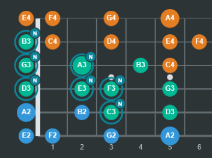

تجسم روی دو ساز
فرتبورد گیتار و کلاویههای پیانو را برای دیدن ارتباط نتها و الگوهای گام کنار هم بررسی کنید.
ابزار آموزشی تعاملی · رایگان و متنباز
تارا گیتارلب یک آزمایشگاه موسیقی در مرورگر است که ارتباط میان گامها، آکوردها و نتها را روی گیتار و پیانو نشان میدهد؛ و یادگیری را با درسهای کوتاه، تمرین و ابزارهای مدرس همراه میکند.

تارا چیست؟
با انتخاب یک گام یا آکورد، نتها را روی فرتبورد گیتار ببینید، جایگاه همان نتها را روی پیانو دنبال کنید و آنها را با صدای تولیدشده در برنامه بشنوید. تارا مفاهیم تئوری را به تصویر و تمرین پیوند میدهد تا بتوانید آنها را روی ساز به کار ببرید.
فرتبورد گیتار و کلاویههای پیانو را برای دیدن ارتباط نتها و الگوهای گام کنار هم بررسی کنید.
از درسهای هدایتشده و تمرینهای نتیابی، ساخت گام و آکورد، شنیداری و میکروفون استفاده کنید.
نتها را نشانهگذاری کنید، نقش آکوردی آنها را تعیین کنید و توالی را هنگام آموزش پخش کنید.
تیونر، مترونوم، ورودی صفحهکلید و MIDI، نتنویسی و تبلچر، پخش صوتی و خروجی PDF در دسترساند.
برای نوازندگان گیتار که میخواهند تئوری را روی دسته ببینند، هنرجویانی که با تصویر و شنیدن بهتر یاد میگیرند، و مدرسانی که به ابزار دیداری برای توضیح مفاهیم موسیقی نیاز دارند.
تارا مستقیماً در مرورگر و بدون نصب نرمافزار اجرا میشود. برای دسترسی به میکروفون در تیونر و بعضی تمرینها، مرورگر به HTTPS یا localhost نیاز دارد. ترجیحات فضای کار و پیشرفت درسها میتوانند در همان مرورگر ذخیره شوند.
تارا با HTML، CSS و JavaScript ساخته شده و کد آن با مجوز MIT در دسترس است. میتوانید کد را ببینید و دربارهٔ پروژه در مخزن GitHub بیشتر بخوانید.
مخزن Tara GuitarLab در GitHubتارا گیتارلب توسط سروش زندهدل ساخته و توسعه داده شده است.
شروع کنید
ابزارهای تئوری، تمرین و آموزش تارا رایگان و آمادهٔ استفادهاند.
ورود به آزمایشگاه